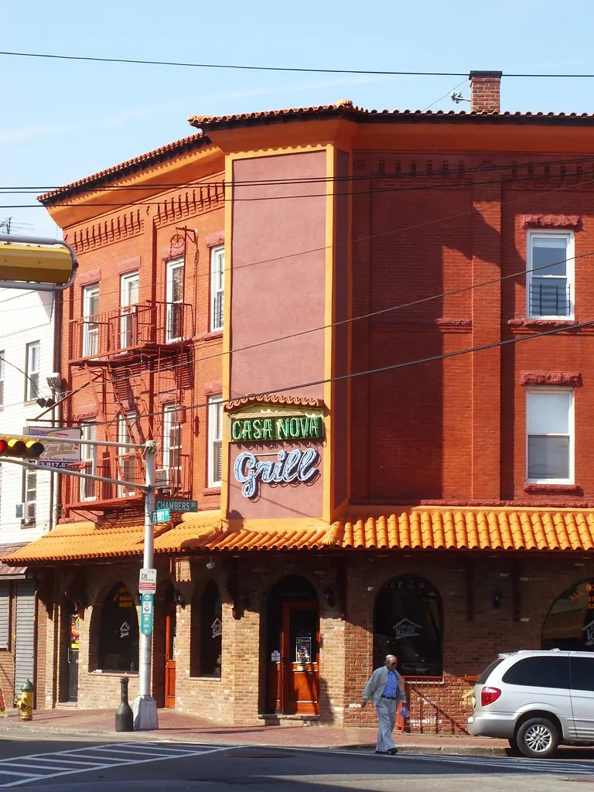
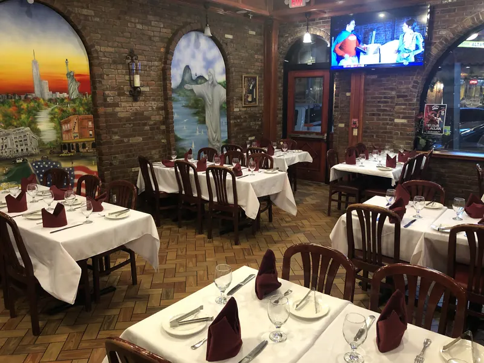
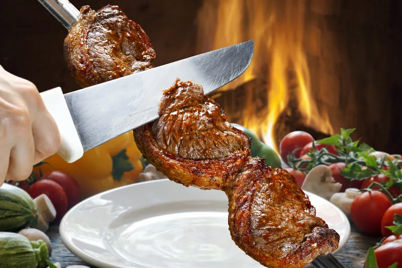
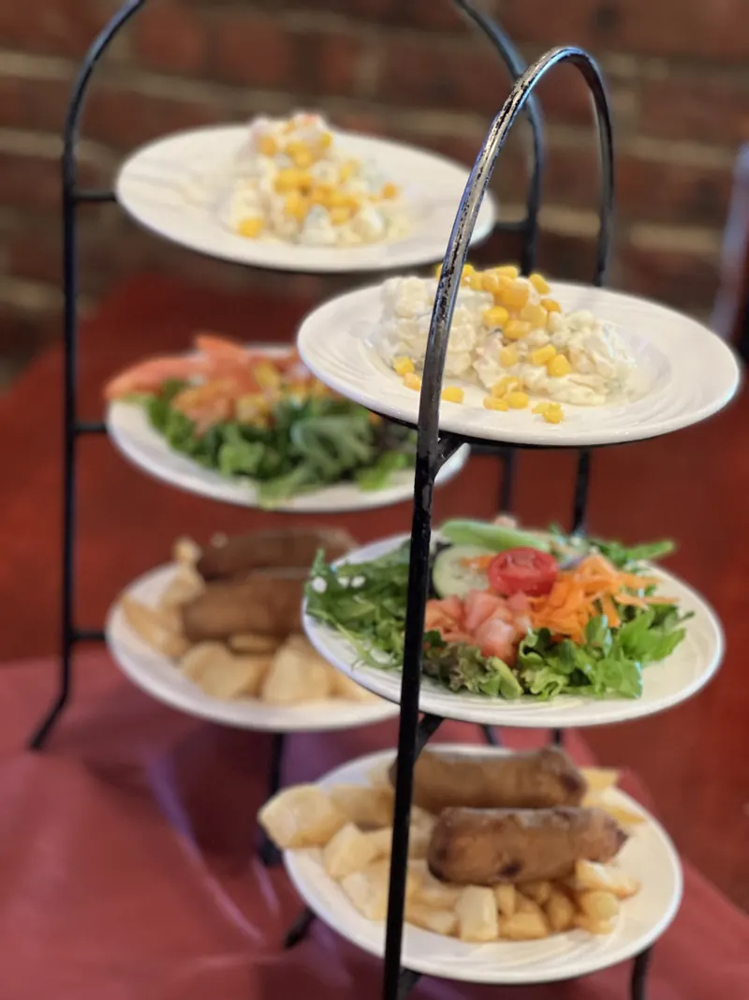
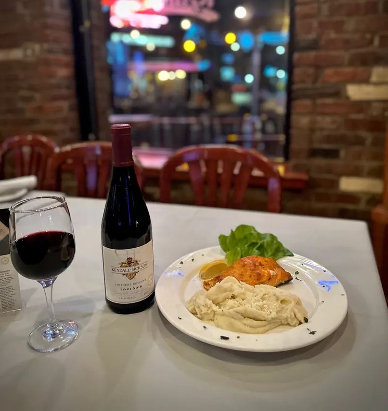
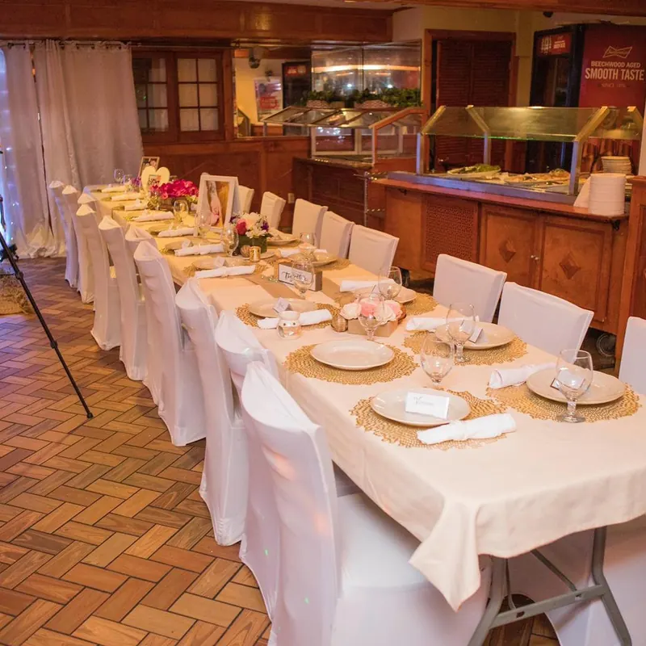
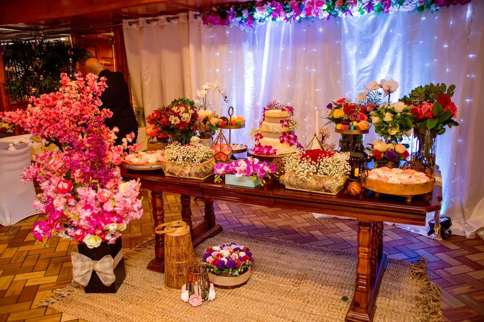

Ironbound · Newark, NJ · Desde novembro de 1992
Rodízio todo dia na Ferry Street.
Carnes na brasa cortadas na sua mesa, salad bar e buffet quente, até você virar o cartão para o vermelho.
- Aberto 7 diasSeg a qui até 0h, sex e sáb até 1h
- Estacionamento grátisEm frente ao restaurante
- 250 lugaresSalões para 30 a 100
Como funciona o rodízio
Verde é pode vir.
Vermelho é um minuto.
Um preço só. Os passadores trazem espetos direto da brasa até a sua mesa, e quem conversa é um cartãozinho. Experimente:
Toque no cartão para virar
0 espetos já passaram pela sua mesa
- 01PicanhaA parte nobre da alcatra
- 02Costela de vacaCostela bovina
- 03Alcatra com baconAlcatra envolta em bacon
- 04Alcatra no alhoAlcatra com alho
- 05Alcatra com queijoAlcatra com queijo
- 06AlcatraAlcatra
- 07Costela de porcoCostelinha suína
- 08LomboLombo suíno
- 09MaminhaMaminha
- 10FrangoCoxa de frango e peito envolto em bacon
- 11FraldinhaFraldinha
- 12LinguiçaLinguiça de porco
- 13CordeiroCordeiro
- 14Maçã de peitoPeito bovino
- 15Coração de frangoCoração de frango
15 cortes da lista do rodízio, mais salad bar e buffet quente. Ver todos os cortes
Novembro de 1992 – hoje
34 anos servindo na Ferry Street.
O Casa Nova Grill abriu em novembro de 1992, fundado pelo restaurateur pioneiro José Moreira. Nas palavras da casa, virou sinônimo de cultura brasileira no Ironbound, em Newark.
A mesma esquina, a mesma brasa: salão de 250 lugares, bar completo, salão de festas privativo e estacionamento do outro lado da rua.


A semana no Casa Nova
Não existe dia errado para rodízio.
- SegundaRodízio11h às 0h
- TerçaRodízio11h às 0h
- QuartaRodízio11h às 0h
- QuintaRodízio11h às 0h
- SextaRodízio11h às 1h
- SábadoRodízioSábado de feijoada11h às 1h
- DomingoRodízioDomingão em família: feijoada, frango com quiabo12h às 0h
Destaques de fim de semana como aparecem no Instagram. Pergunte os pratos do dia ao ligar.

Além do espeto
Moqueca, feijoada, mariscada e um bife a cavalo de verdade.
O à la carte vai dos pratos típicos aos frutos do mar e às carnes, com pratos feitos para o almoço da semana. Escolha o que quer e ligue para pedir para viagem.




Salões privativos · 30 a 100 convidados
Batizado no domingo, casamento no sábado.
Planejamento e execução completos da festa, com buffet: casamentos, aniversários, batizados, chás, almoços de negócios e festas de fim de ano. Nenhuma festa é pequena ou grande demais.
Planejar minha festaNa esquina da Ferry Street.
264 Ferry Street
Newark, NJ 07105
Estacionamento grátis do outro lado da rua.